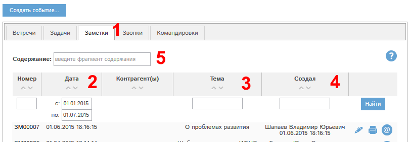
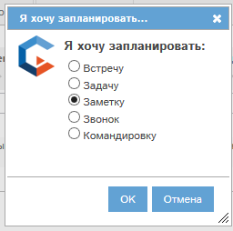
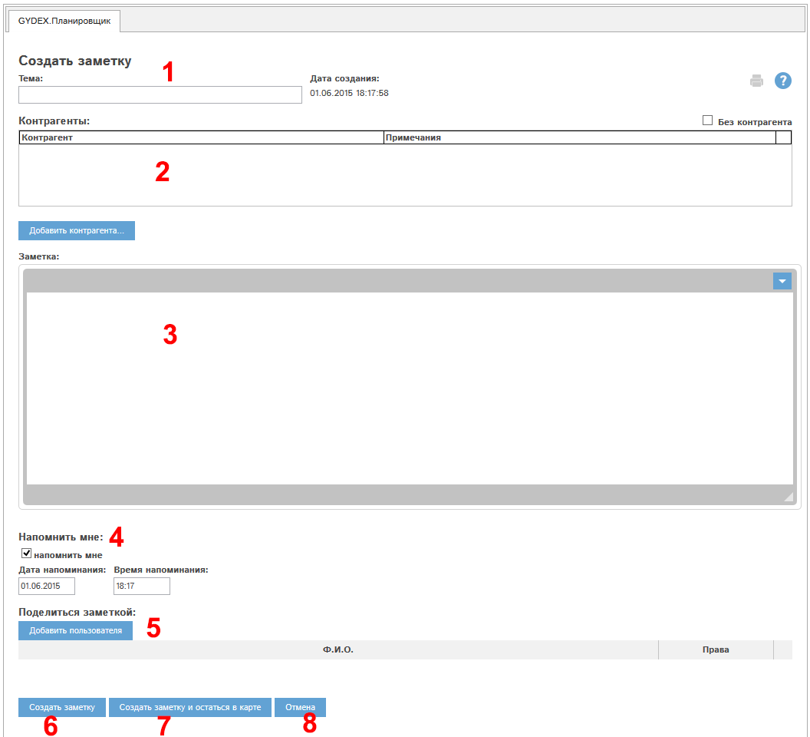
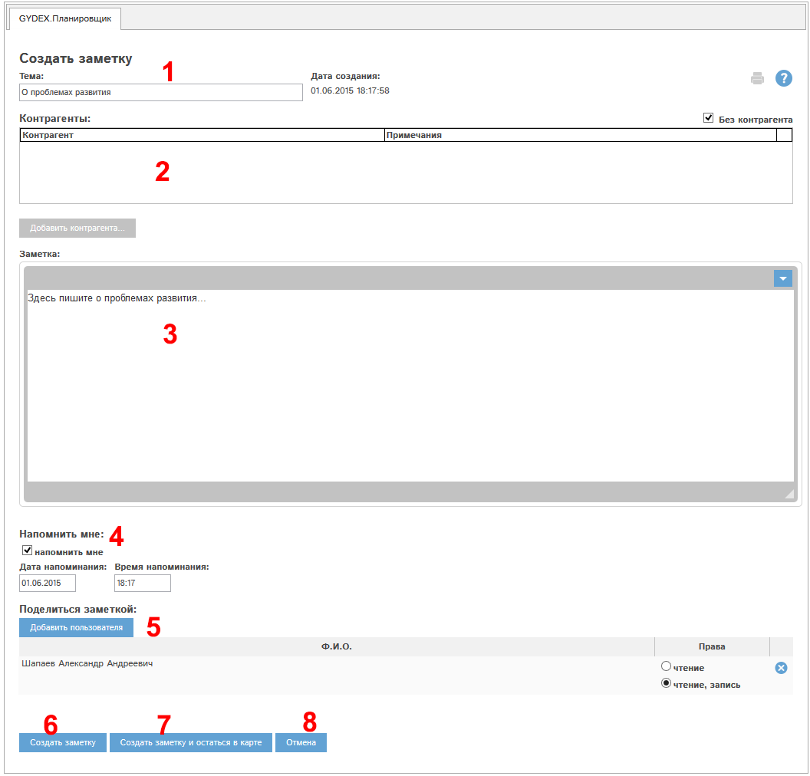
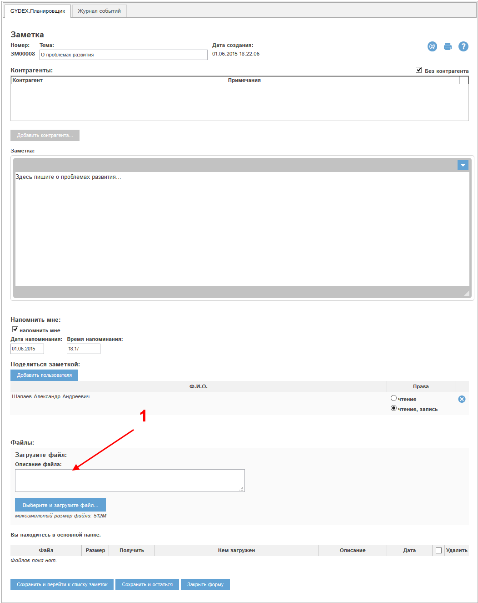
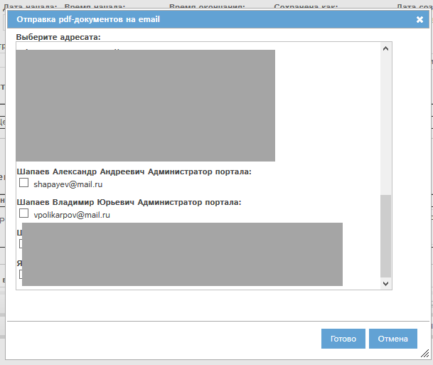
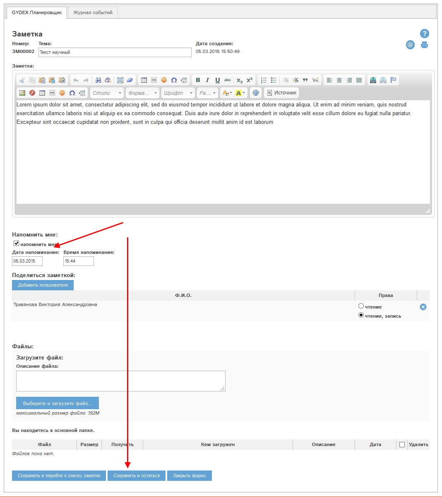
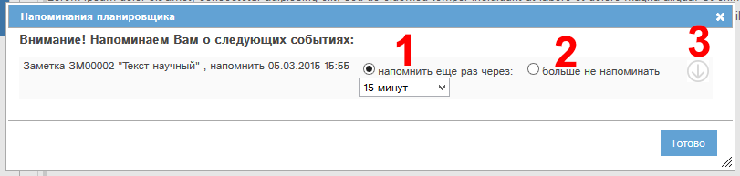

Список доступных Вам заметок находится в разделе "Планировщик", на вкладке "Заметки":

Рис. Реестр заметок.
Наиболее важные графы реестра:
Аналогично прочим реестрам CRM GYDEX, доступна поиск и сортировка по определенным полям.
Для создания новой заметки необходимо нажать кнопку "Создать событие" над реестром. Откроется окно создания события:
Также Вы можете нажать кнопку "Новая заметка" на странице "Быстрые действия".

Рис. Окно создания события планировщика.
В окне необходимо отметить пункт "Заметку", затем нажать ОК. Откроется форма создания заметки:

Рис. Форма создания заметки.
Блок 1: Тема заметки.
Блок 2: Связанный с заметкой контрагент или несколько контрагентов. Если с заметкой не связаны контрагенты, отметьте галочку "Без контрагента".
Блок 3: Текст заметки
.
После первичного сохранения заметки в ее карте станет доступным блок прикрепления файлов к заметке.
Блок 4: Напомнить мне. Позволяет создать напоминание о заметке в выбранный период.
Блок 5: Поделиться заметкой. Если Вы хотите поделиться заметкой с другими сотрудниками, то для их выбора нажмите кнопку "Добавить пользователя". Для каждого сотрудника Вы можете указать, в каком режиме открывать ему заметку: только чтение, либо чтение и правка.
Кнопка "Создать заметку" (6) позволяет создать заметку и перейти в реестр заметок.
Кнопка "Создать заметку и остаться в карте" (7) позволяет создать заметку и остаться в ее карте.
Кнопка "Отмена" (8) - закрытие формы без сохранения данных в программе.
Заполним все указанные блоки. Карта заметки примет вид:

Рис. Карта заметки заполнена.
Нажмем "Сохранить заметку и остаться в карте" (7). Откроется форма просмотра/редактирования замети.

Рис. Карта заметки.
В заметке появился блок прикрепления файлов (1).
Кроме того, становятся активными кнопки (получить печатную форму в pdf-формате) и (отправить печатную форму в pdf-формате на электронную почту).
Рассмотрим работу кнопки . При ее нажатии откроется окно выбора адресата:

Рис. Окно выбора адресата.
Для отправки печатной формы на электронную почту необходимо отметить галочками требуемые адреса сотрудников и нажать кнопку "Готово".
Для заметок доступна функция напоминаний. Вы можете установить себе напоминание об этой заметке.
Для этого в карте заметки нужно отметить галочку "напомнить мне", указать дату напоминания и время напоминания, и затем сохранить карту:

Рис. Установка напоминания о заметке.
В указанное Вами время Вы получите в программе напоминание о заметке:
Рис. Напоминание о заметке.
В окне напоминания можно выбрать дальнейшие действия:
При выборе вариантов 1-2 нужно нажать кнопку Готово в окне напоминания.
Все основные реестры программы могут быть индивидуально сконфигурированы: вы можете указать, какие колонки и в какой последовательности вы желаете видеть. Всегда можно вернуться к стандартному виду реестра. Рассмотрим работу этой функции на примере реестра контрагентов.
Для настройки реестра нажмите кнопку  :
:

Откроется окно настройки. Слева указаны доступные колонки (1), справа - колонки, которые показаны в реестре (2):

Для перемещения столбцов между блоками 1 и 2 выделите требуемые столбцы (можно выделить несколько столбцов, нажав и удерживая ctrl при их выделении), и нажмите кнопку > для перемещения столбцов из доступных в видимые, либо кнопку < для перемещения из видимых в доступные столбцы.
Доступна сортировка видимых столбцов (в блоке 2). Для того, чтобы поднять или опустить столбец или их группу, выделите требуемые столбцы и нажмите  для подъема или
для подъема или  для спуска столбца.
для спуска столбца.
Для того, чтобы сохранить внесенные изменения, нажмите Готово. Реестр обновится, и будут показаны выбранные вами столбцы в выбранной вами последовательности.
Для того, чтобы восстановить стандартный вид реестра, нажмите кнопку "Сделать стандартными".